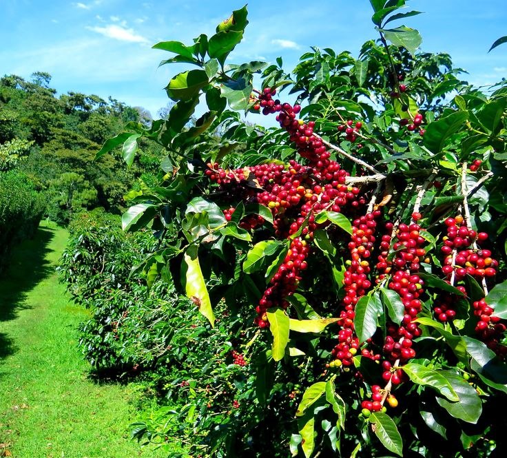
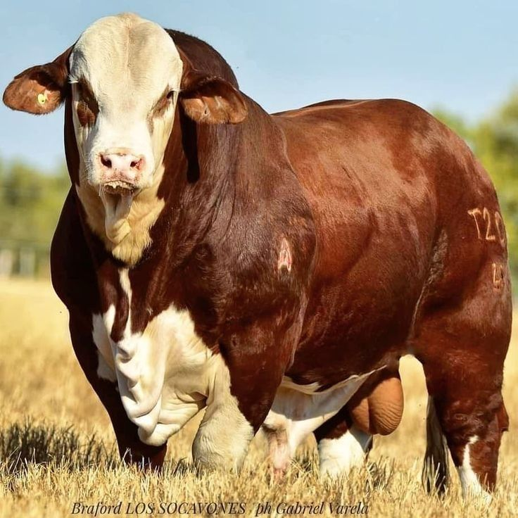
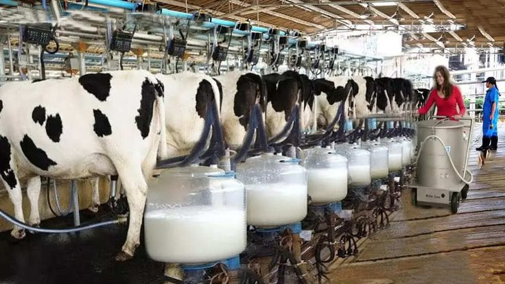
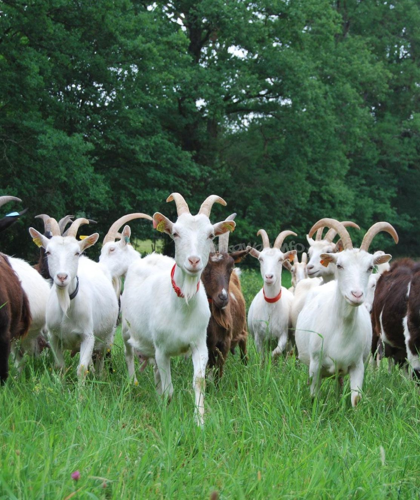

Experience the true essence of natures bounty with our exeptional plantation and animal rearing practices,
Our commitment to sustainability and ethical farming ensures that you recieve the freshest, highest quality products,
grown and raised with care.
Emprace the goodness of nature and indulge in the flavors of our "my farmer" grown produce and ethically raised animals.

Welcome to our farm home of quality services and products
we are happy to see you visit our sites.
we at alltime aim at seeing you come back again.
we are glad to inform you that we are
here to proivide you with whatever you need
as a famer we would like to provide you with high quality products from our farm
we offer the following:
high qualified veterinarians,all horticultural products,beef
cattles,dairy cattles,all floricural products,
mutton,pork, and we also have anAgrovet shop were you can get all sorts of animals and plants
Medicare.
  
My Farmer is an organization, That is committed on producing
high-quality, sustainable beef and dairy products.
We raise our animals on pastureland and feed them on natural diet
which results in healtheir and more flavourful products,
we are confident that you will be satisfied with our products,
We challege you to the a try today!
In addition to our farming, we also have Specialists
for both our
animals and plantations, they can provide you as our client with
wide range
of services such as:Livestock management,crop production,
Farm business
management,implimentation of breeding,
nutrition of animals,
diagonise and treat
livestock diseases, design and manage livestock housing
Choosing 'My Farmer' is the best option for you!
for your products. We are reliable,Experienced, and
committed to supplying out quality products to our clients,
with us you will meet all your hortculture and floriculture needs at a fair prices
contuct us today to order or to lern more
about our products and services.